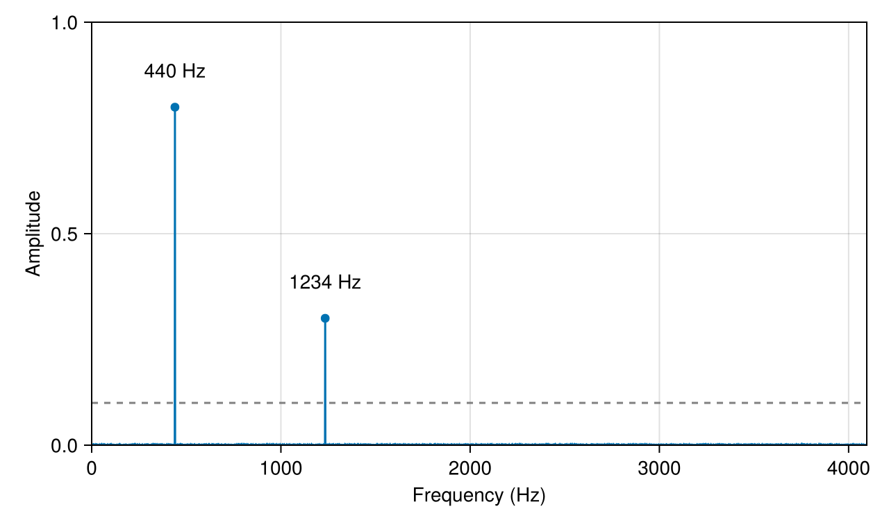

Spectrum of a sampled signal
The most common use of a Fourier transform: which frequencies are in a measured signal, and how strong are they? Here a signal of 1 s sampled at 8192 Hz contains two tones and some noise. The record is exactly one second long, so each frequency bin is 1 Hz wide and the tones fall on bins without leakage.
using FFTL, CairoMakie, Random
Random.seed!(2)
fs = 8192.0 # sampling rate in Hz
N = 8192 # samples: 1 s
t = (0:N-1) ./ fs
x = 0.8 .* sin.(2π * 440 .* t) .+ 0.3 .* sin.(2π * 1234 .* t) .+ 0.05 .* randn(N);A real signal has a spectrum with Hermitian symmetry, so rfft returns only the bins from 0 Hz up to the Nyquist frequency $f_s/2$: $N ÷ 2 + 1$ complex values.
X = FFTL.rfft(x);
size(X)(4097,)Amplitudes
For a sinusoid of amplitude $A$ the bin at its frequency holds $A N / 2$ in magnitude, so $2|X_k|/N$ reads the amplitude back. The bin spacing is $f_s / N$:
f = (0:N÷2) .* (fs / N);
amp = 2 .* abs.(X) ./ N;Pick the strongest bins above a threshold and report them:
idx = findall(>(0.1), amp);
for k in idx
println("f = ", round(f[k]; digits = 1), " Hz, amplitude ", round(amp[k]; digits = 3))
endf = 440.0 Hz, amplitude 0.799
f = 1234.0 Hz, amplitude 0.3The two tones come out at 440 Hz and 1234 Hz with amplitudes close to 0.8 and 0.3; the noise stays well below the threshold.
The spectrum itself, with the bins above the threshold and the threshold line:
fig = Figure(size = (640, 380))
ax = Axis(fig[1, 1]; xlabel = "Frequency (Hz)", ylabel = "Amplitude",
limits = (0, fs / 2, 0, 1))
lines!(ax, f, amp)
scatter!(ax, f[idx], amp[idx])
hlines!(ax, 0.1; color = :gray, linestyle = :dash)
text!(ax, f[idx], amp[idx] .+ 0.06;
text = [string(Int(round(fk)), " Hz") for fk in f[idx]],
align = (:center, :bottom))
fig
Why this needs no more than one transform
The transform of the whole record is one call. For a long recording, the same plan is applied to every block, which is what the plans how-to shows.
Inverse
Applying the inverse real transform to the spectrum with the two tones removed gives the noise alone:
Y = copy(X);
Y[idx] .= 0;
clean = FFTL.irfft(Y, N);
round(sqrt(sum(abs2, clean) / N); digits = 3) # RMS, the noise was 0.050.05This page was generated using Literate.jl.